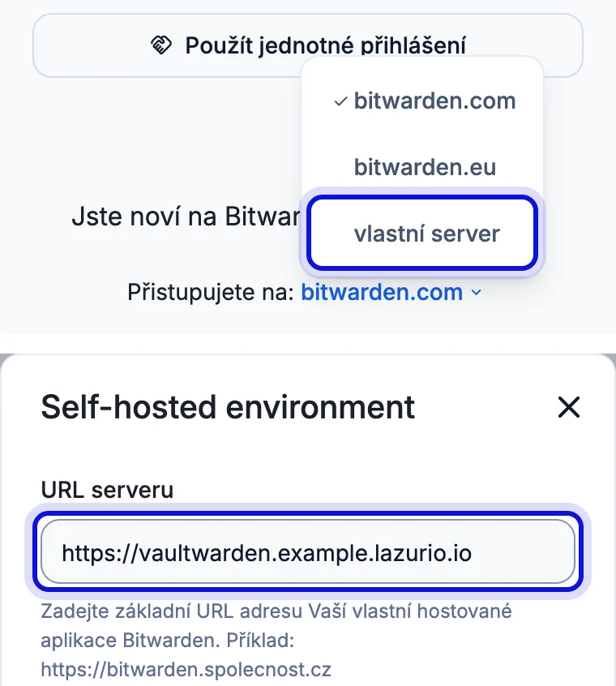
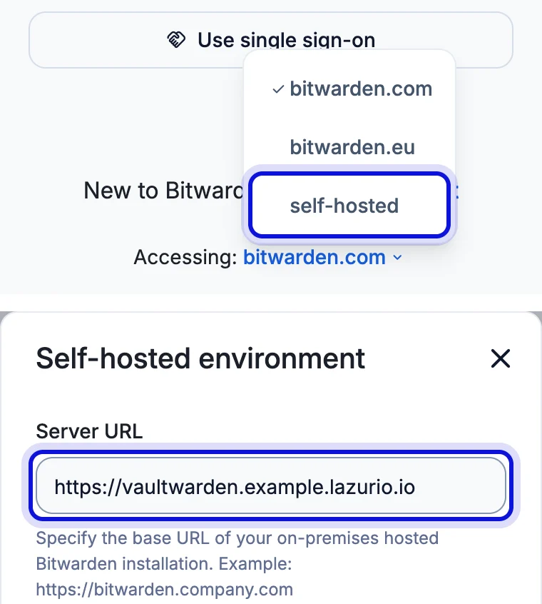
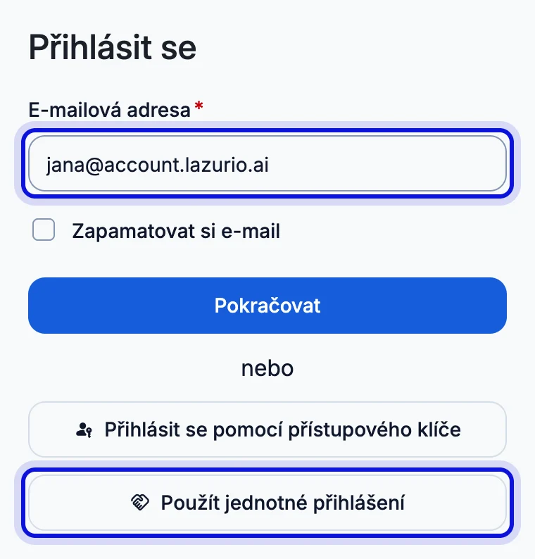
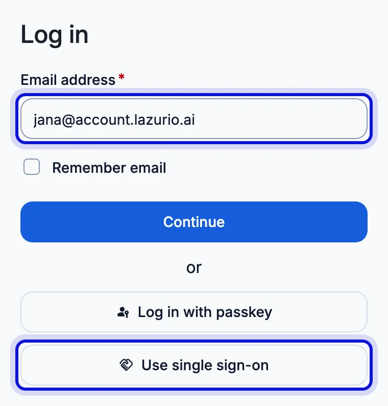
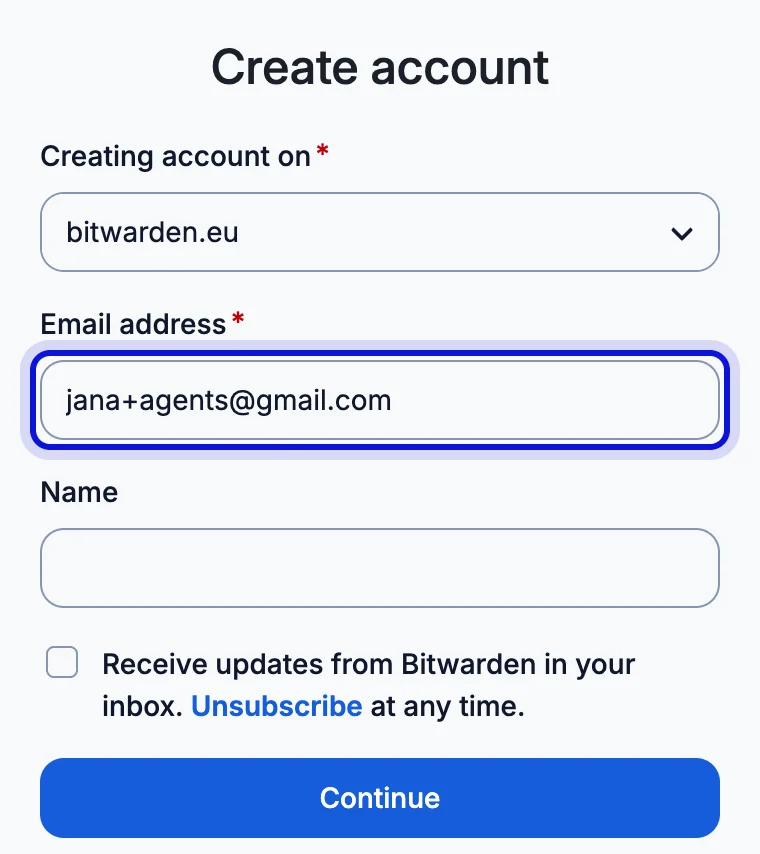
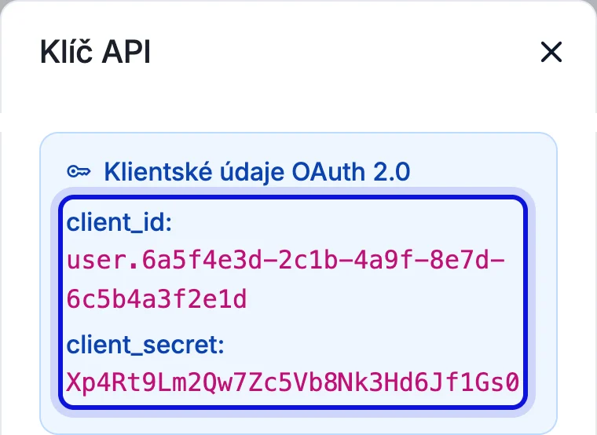
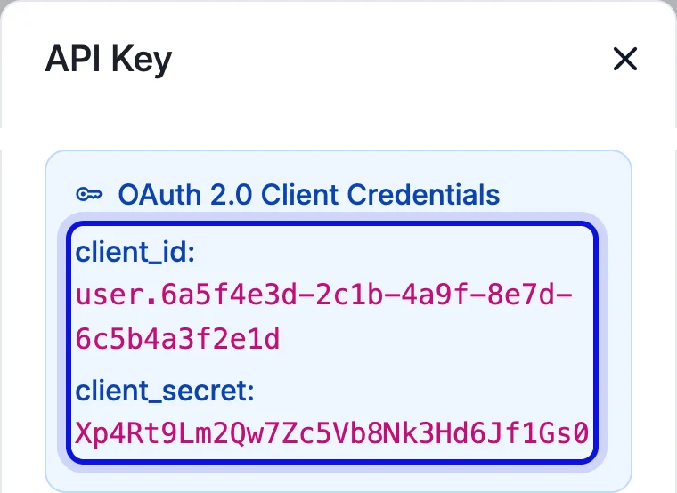

Reading Organizations…
Reading Organizations…
Whoever can enter the Environment has its passwords too
The vault and its passwords stay in Bitwarden.




Your agents get their own account. Yours stays yours.



There is nothing to set up here.
Environment vault
Apps, Chat and Automate
The colours of Chat, Apps and Automate in this Environment.
SSH from your devices is available in Environments on Linux and macOS.
Its name and its public key: one line from the .pub file that starts with ssh-ed25519. Never the private key.
SSH config
Add to ~/.ssh/config
known_hosts
Add to ~/.ssh/known_hosts_lazurio
Adding a key does not give this device network access by itself. If SSH fails, give your agent the exact error. If the device is not allowed on the network yet, the network administrator can allow it.
Whoever looks after this Environment removes them.